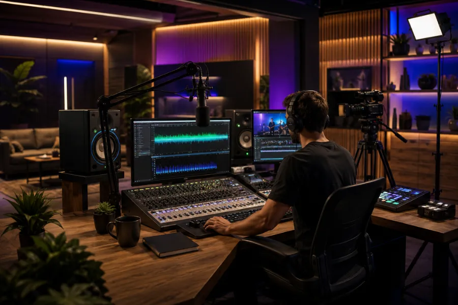
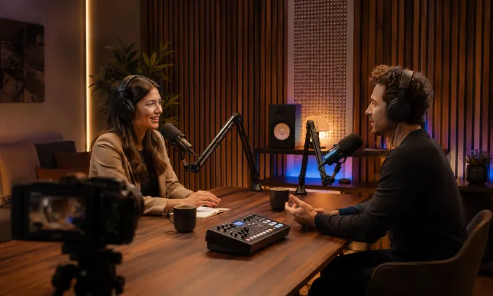
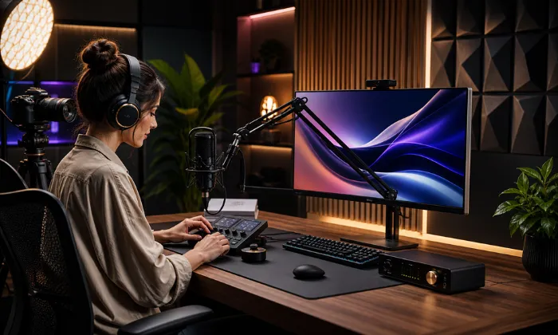
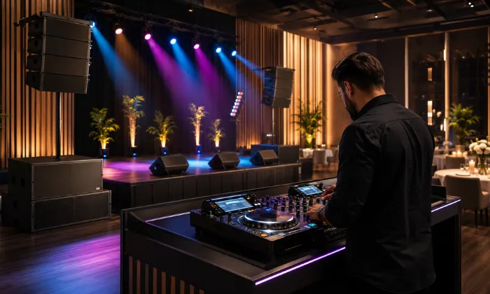
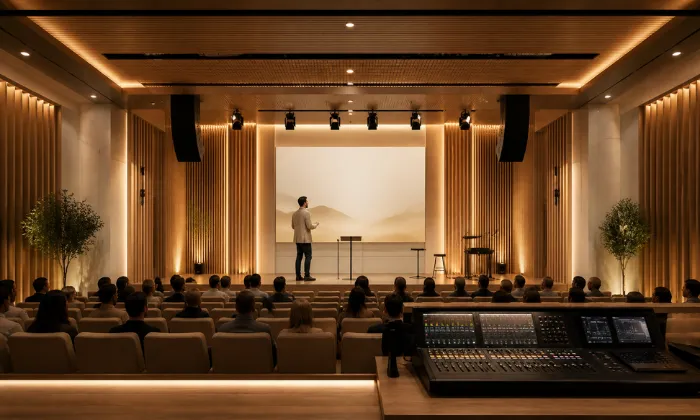
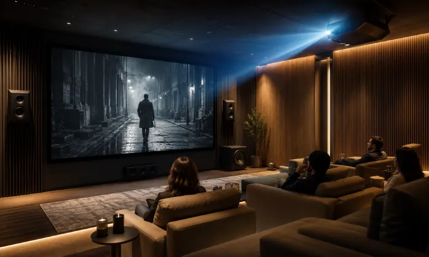
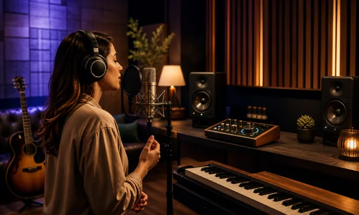

Audio y video para eventos y producción: sonido, captura, mezcla y transmisión.
Diseñamos e integramos sistemas para eventos, producción audiovisual,
podcast, streaming, DJ, centros de culto, cine independiente, músicos y
vocalistas.
Antes de seleccionar equipos revisamos espacio, audiencia, cobertura,
nivel esperado, ruido, fuentes, microfonía, monitoreo, video, energía, señal, cableado y
operación.
Cuando el sistema está mal dimensionado, audio, video y operación se comprometen
En eventos, contenido digital y producción, un sistema debe responder al espacio y al uso. Cobertura insuficiente, potencia mal calculada, microfonía inadecuada, monitoreo deficiente o una ruta de señal poco clara pueden limitar el desempeño del proyecto.
En DG Audiosound revisamos el proyecto completo antes de recomendar tecnología. Para sistemas de sonido consideramos cobertura, SPL esperado, impedancia o línea distribuida cuando aplica, potencia, reserva del amplificador, número de canales y distancias de cableado; para video y producción revisamos fuentes, formatos, resolución, conectividad y flujo de señal.
Audio poco claro
Una selección o ubicación incorrecta de altavoces, micrófonos o procesamiento puede generar zonas desiguales, baja inteligibilidad o falta de margen operativo.
Video limitado
Tamaño de imagen, brillo, resolución, distancia, conectividad y formato deben definirse según contenido, ambiente y posiciones de la audiencia.
Podcast y Grabación
- Micrófonos e interfaces según número de fuentes
- Monitoreo, soportes y distribución de señal
- Grabación y video según el flujo de producción
La anatomía de un sistema de producción bien planificado
Antes de seleccionar equipos definimos entradas y salidas, flujo de señal, cobertura, potencia, monitoreo, radiofrecuencia, video, red, energía, cableado, montaje y capacidad de crecimiento.

Producción de Audio
Definimos tipo y cantidad de micrófonos, interfaces, consolas, niveles de señal y monitoreo según las fuentes y el flujo de producción.
Por qué la planeación técnica importa
El dimensionamiento previo ayuda a definir cobertura, potencia, compatibilidad, flujo de señal, operación y capacidad futura antes de invertir en equipos.
Dimensionamiento Técnico
Calculamos cobertura, carga, potencia, canales, impedancia o taps cuando aplican y margen operativo antes de seleccionar amplificación y altavoces.
Flujo de Señal y Operación
Definimos ruteo, entradas, salidas, mezcla, procesamiento y control para que la operación corresponda con el uso real del sistema.
Cobertura y Monitoreo
Consideramos patrón de dispersión, posiciones de audiencia, ruido ambiental, nivel esperado y necesidades de monitoreo para reducir zonas débiles o excesivas.
Infraestructura Escalable
Cuando el proyecto lo permite, dejamos capacidad en señal, red, cableado, potencia, entradas y salidas para facilitar futuras ampliaciones.
Un Proceso Claro para Equipar e Instalar
Un proceso estructurado para definir requisitos, dimensionamiento, señal, energía, cableado, equipos, instalación y puesta en marcha antes de cerrar el proyecto.
Contacto inicial
Nos compartes tipo de proyecto, espacio, audiencia, contenido, fecha o dinámica de uso y objetivos principales.
Diagnóstico
Revisamos dimensiones, montaje, ruido, cobertura, fuentes, energía, red, cableado, operación y equipos existentes.
Diseño de solución
Definimos cobertura, carga, potencia, microfonía, mezcla, monitoreo, video, señal, conectividad, compatibilidad y capacidad de crecimiento.
Instalación
Realizamos suministro, montaje, cableado, conexión, configuración y pruebas conforme al alcance aprobado.
Capacitación
Realizamos ajustes finales, pruebas funcionales y capacitación básica para el personal responsable de la operación.
Explora las aplicaciones de esta solución pilar
Cada aplicación requiere criterios distintos de captura, cobertura, mezcla, monitoreo, video y conectividad. Selecciona el tipo de proyecto para revisar su alcance.

Podcast
Micrófonos, interfaces, mezcla, monitoreo, grabación y video según participantes y flujo de producción.
Ver Solución
Streamers
Audio, cámaras, captura, monitoreo y control para transmisiones y creación de contenido.
Ver Solución
Sonidos y DJ
PA, subwoofers, mezcla, procesamiento, microfonía y monitoreo dimensionados según audiencia y cobertura.
Ver Solución
Centros de Culto
Microfonía, refuerzo sonoro, monitoreo, video y transmisión según espacio, audiencia y operación.
Ver Solución
Cine Independiente
Proyección o pantallas, audio, reproducción y conectividad para exhibiciones y contenido especial.
Ver Solución
Músicos y vocalistas
Microfonía, interfaces, monitoreo, mezcla y grabación para ensayo, contenido y producción musical.
Ver SoluciónMarcas profesionales para soluciones de alto rendimiento
Seleccionamos tecnología profesional según cobertura, potencia, conectividad, compatibilidad, flujo de trabajo, operación y presupuesto del proyecto.
Resolvemos tus Dudas Frecuentes
Podemos integrar sistemas PA, altavoces y subwoofers, amplificación, procesamiento, consolas, microfonía, monitoreo, interfaces, grabación, streaming, cámaras, proyección, pantallas, distribución de señal, cableado y control. El alcance depende del proyecto.
Sí. Antes de recomendar equipos revisamos dimensiones, audiencia, cobertura, nivel esperado, ruido, tipo de contenido, fuentes, microfonía, monitoreo, energía, señal y cableado. En sistemas de sonido también validamos carga, potencia, impedancia o taps cuando aplican y margen de amplificación.
Sí. Podemos integrar micrófonos, interfaces, mezcla, monitoreo, cámaras, captura de video y flujo de señal para podcast, streaming y creación de contenido, de acuerdo con número de participantes y formato de producción.
Sí. Diseñamos sistemas PA, subwoofers, mezcla, procesamiento, microfonía, monitoreo y cableado para sonidos, DJs y presentaciones. La selección depende de audiencia, cobertura, SPL objetivo, montaje y condiciones del espacio.
Sí. Según el alcance, podemos incluir montaje, cableado, conexión, configuración, pruebas, ajustes, puesta en marcha y capacitación básica para el personal responsable.
Puedes escribirnos por WhatsApp al 55 3727 0177 o completar el formulario. Para preparar una propuesta necesitaremos tipo de proyecto, espacio, audiencia, uso, fuentes, necesidades de audio y video, equipos existentes y etapa del proyecto.
Cuéntanos tu proyecto
Cuéntanos el tipo de proyecto, espacio, audiencia, necesidades de audio y video, equipos existentes y etapa de implementación.
¿En qué podemos
ayudarte?
Podemos orientarte sobre sistemas PA, microfonía, consolas, monitoreo, podcast, streaming, video, proyección y distribución de señal para eventos y producción.
Solicita asesoría para tu proyecto
Completa el formulario y se abrirá WhatsApp con la información capturada. Incluye medidas aproximadas, audiencia, tipo de contenido, fuentes, equipos existentes y si el sistema será fijo o móvil cuando aplique.